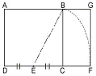
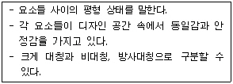
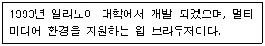
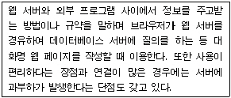
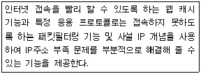
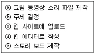

웹디자인기능사 (2009-01-18 기출문제)
1과목: 디자인 일반
1. 다음은 무엇을 구하는 도형인가?

- 심메트리
- 황금분할
- 루트구형
- 아심메트리
(정답률: 90%)

2. 동화현상에 대한 설명으로 틀린 것은?
- 색들끼리 서로 영향을 주어서 인접 색에 가까운 것으로 느껴지는 현상을 말한다.
- 어떤 색에 대한 경험이 나중에도 기억으로 남아 있는 것을 말한다.
- 동화현상에는 명도의 동화, 채도의 동화, 색상의 동화가 있다.
- 동화현상은 눈의 양성적 또는 긍정적 잔상과의 관련으로서 설명된다.
(정답률: 75%)
3. 1931년 국제 조명의원회에서 가산 혼합원리로 물리적인 빛의 혼합을 기초로 하는 표색계는?
- CIE 표색계
- 오스트발트(OSTWALD) 표색계
- 맥스웰(MAXWALL) RGB 표색계
- 먼셀(MUNSELL) 표색계
(정답률: 68%)
4. 미술공예운동(Art Crafts Movement) 창시자는?
- 윌리엄 모리스
- 헨리포드
- 반 데 벨데
- 무테지우스
(정답률: 93%)
5. 다음 중 동일 색상의 배색이 아닌 것은?
- 정적인 질서를 느낄 수 있다.
- 차분한 느낌을 느낄 수 있다.
- 통일된 감정을 느낄 수 있다.
- 즐거운 느낌을 느낄 수 있다.
(정답률: 88%)
6. 『우리는 디자인 속에서 살고 있다.』 라는 문장과 일치하는 디자인 개념은?
- 디자인은 고도로 복잡하고 세련된 숙련이다.
- 디자인은 항상 어떤 가능성을 전제로 시작된다.
- 디자인은 모든 사람의 일상이다.
- 디자인은 예술이다.
(정답률: 91%)
7. 어느 색이 다른 색에 둘러쌓여 있거나 인접한 두 색을 동시에 볼 때 일어나는 대비를 무엇이라고 하는가?
- 동시대비
- 색상대비
- 연변대비
- 계시대비
(정답률: 70%)
8. 주전자, 냉장고, 자동차를 디자인 하는 디자인 영역은?
- 패션디자인
- 시작디자인
- 환경디자인
- 제품디자인
(정답률: 96%)
9. 다음이 설명하고 있는 디자인 원리는?

- 반복
- 균형
- 조화
- 대비
(정답률: 78%)
10. 모든 사물은 구,원기둥 및 원뿔 형태와 같은 기하학적 형태로 구성되어 있다고 주장한 사람은?
- 파파넥
- 고호
- 세잔
- 오장팡
(정답률: 71%)
11. 다음은 디자인의 일반적인 분류에 속하지 않는 것은?
- 프로덕트 디자인
- 시각디자인
- 기계설계 디자인
- 환경디자인
(정답률: 75%)
12. 다음 중 디자인의 조건 중 시대성, 국제성, 사회성, 민족성, 개성 등이 복합 된 것은?
- 합목적성
- 독창성
- 질서성
- 심미성
(정답률: 53%)
13. 하나의 색상에 각기 다른 여러 명도의 조화를 단계적으로 동시에 배색하여 얻어지는 조화를 무슨 조화라 하는가?
- 명도대비에 따른 조화
- 보색대비에 다른 조화
- 명도에 따른 조화
- 주조색에 따른 조화
(정답률: 55%)
14. CIP(Corporate Identity Program)의 분류 중에서 가장 기본요소에 해당하는 것은?
- 전용색상
- 사인
- 포장
- 서식
(정답률: 68%)
15. 다음 선에 관한 설명으로 바른 것은?
- 면의 한계나 교차점에 의해 생기는 선은 적극적인 선이다.
- 수평선은 고결, 희망, 상승감을 나타낸다.
- 점과 점이 이어져 잇는 선은 소극적인 선이다.
- 고딕 건축물의 고결함은 수직선을 대표한다.
(정답률: 67%)
16. 같은 크기의 형을 상, 하로 겹칠 때 위쪽의 것이 크게 보이는 착시현상은?
- 각도와 방향의 착시
- 수직 수평의 착시
- 바탕과 도형의 착시
- 상방 거리의 과대착시
(정답률: 71%)
17. 디자인의 원리 중 유사, 대비, 균일, 강약 등이 포함되어 나타나는 디자인의 원리는?
- 균형
- 리듬
- 조화
- 통일
(정답률: 65%)
18. 다음 중 시각 커뮤니케이션의 4대 매체가 아닌 것은?
- 포스터 디자인
- 신문 광고
- 잡지 광고
- 패키지 디자인
(정답률: 87%)
19. 먼셀의 색상환에서 5R이 표준 빨강이면 1R은 어디에 속하는가?
- 연지
- 다홍
- 주황
- 보라
(정답률: 64%)
20. 가법혼합에서 색을 혼합하면 할수록 높아지게 되는 것은 무엇인가?
- 명도
- 채도
- 색상
- 점도
(정답률: 68%)
2과목: 인터넷 일반
21. abc대학교의 웹 페이지 주소 표기로 옳은 것은?
- http://www.abc.ac.kr
- http://www.abc.re.kr
- http://www.abc.go.kr
- http://www.abc.co.kr
(정답률: 82%)
22. IPv4 주소에서 각 클래스 별 첫 8bit의 값이 옳은 것은?
- A: 0000 0000~0111 1110 B: 1000 0001~1011 1111
- A: 0000 0000~0111 1111 B: 1000 0000~1011 1111
- A: 0000 0001~0111 1110 B: 1000 0000~1011 1111
- A: 0000 0001~0111 1111 B: 1000 0001~1011 1111
(정답률: 74%)
23. 검색 엔진 네이버(Naver)에서 대한민국 또는 경주가 포함되고 배낭여행이라는 단어가 반드시 포함되며, 패키지라는 단어가 5자 정도 순서대로 인접하여 있는 웹 문서를 검색하고자 한다. 올바른 검색 식은?
- (대한민국 경주) and 배낭여행 within 패키지
- (대한민국or 경주) and 배낭여행 within 패키지
- (대한민국 경주) and 배낭여행 within/5 패키지
- (대한민국or 경주) and 배낭여행 within/5 패키지
(정답률: 80%)
24. 최상위 도메인 gov와 동일 성격을 갖는 서브 도메인의 이름은?
- ac
- go
- or
- re
(정답률: 84%)
25. HTML 문서의 입력양식 필드에서 값이 바뀌었을 때 처리해 주는 자바스크립트의 이벤트 메소드는?
- onChange()
- onClick()
- onLoad()
- onSelect()
(정답률: 80%)
26. 웹 문서 작성을 위한 국제 표준언어가 아닌 것은?
- MS-WORD
- SGML
- HTML
- XML
(정답률: 75%)
27. DHTML(Dynamic HTML)의 특징이 아닌 것은?
- HTML 문서에 잇는 객체의 내용을 자유롭게 변경할 수 있다.
- CGI로 처리해야 할 작업들을 각 클라이언트에서 처리하기 때문에 서버의 부하를 줄일 수 있다.
- 웹 페이지가 로드되면, 클라이언트 쪽에서 이벤트를 발생 한 경우에만 서버에서 웹 페이지를 다시 로드하므로 서버로드가 줄어든다.
- 원하는 정보를 찾기 위해 웹 서버를 돌아다닐 필요가 없게 만들어 주는 인터랙티브(interactive) 한 페이지이다.
(정답률: 56%)
28. 자바 스크립트 변수에 대한 설명으로 옳지 않은 것은?
- 변수를 선언하지 않고 사용하는 경우에 전역 변수가 된다.
- 지역 변수는 반드시 함수 내에서만 선언되어야 한다.
- 지역 변수 선언은 Dim 키워드를 사용하여 선언한다.
- 지역 변수는 선언된 중괄호 { }안에서만 사용할 수 있다.
(정답률: 66%)
29. 인터넷 상에 산재해있는 제반 정보를 미리 수집하고 이를 체계적으로 저장한 후, 사용자가 원하는 정보를 수시로 찾을 수 있도록 해주는 일종의 데이터베이스 관리 시스템을 무엇이라 하는가?
- 웹 브라우저
- 메일링리스트
- 무료계정
- 검색엔진
(정답률: 76%)
30. 다음 중 인터넷 익스플로러의 주요 기능이 아닌 것은?
- 홈페이지를 제작하고 수정 할 수 있다.
- 방문한 홈페이지의 경로를 확인해서 다음에 쉽게 찾아 갈 수 있다.
- 내용 관리자를 통하여 음란물의 차단 등 검색할 수 있는 내용을 통제할 수 있다.
- 홈페이지, 이메일 주소, 백과사전, 기사, 지도 등의 정보 유형을 선택하여 검색 할 수 있다.
(정답률: 85%)
31. 다음이 설명하고 있는 웹 브라우저는?

- 모자익
- 인터넷 익스플로러
- 네스케이프
- 핫 자바
(정답률: 51%)
32. HTML을 자동으로 생성해 주는 웹 에디터 프로그램이 아닌 것은?
- 나모(Namo)
- 드림위버(Dreamweaver)
- 프리미어(Premiere)
- 프론트페이지(Frontpage)
(정답률: 71%)
33. 다음 중 OSI 7 계층 중 최상위 계층은?
- 세션(Session)계층
- 응용(Application)계층
- 네트워크(Network)계층
- 전송(Transport)계층
(정답률: 75%)
34. 다음이 설명하는 것은?

- CGI
- HTTP
- SSL
- FTP
(정답률: 36%)
35. <a href="http://www.hrdkorea.or.kr" target="①">에서 ①에 나타날 수 있는 값과 그 설명의 연결이 틀린 것은?
- _blank : 링크된 문서를 새 창에 보여준다.
- _parent : 링크된 문서를 창 전체에 보여준다.
- _self : 링크된 문서를 하이퍼링크가 있던 현재 프레임에 보여준다.
- _top : 링크된 문서를 창 전체에 보여준다.
(정답률: 47%)
36. 자바 스크립트의 장점으로 볼 수 없는 것은?
- 컴파일 과정을 거치지 않기 때문에 신속한 개발을 할 수 있다.
- HTML 문서에 직접 삽입이 가능하므로 독립적인 환경을 구축할 필요가 없다.
- 어떤 운영체제와 하드웨어에서도 작동하는 이식성이 높은 언어이다.
- 자바스크립트 이용한 응용프로그램은 브라우저가 제한하는 기능적 한계에서 벗어날 수 있다.
(정답률: 55%)
37. 다음 기능을 수행하는 것은?

- 백신 프로그램
- 웹 서버
- 프록시 서버
- LAN 프로토콜 분석기
(정답률: 68%)
38. 데이터 통신에서 결선 방식(토플로지)을 분류할 때 하나의 전송 채널을 사용하며, 분산제어 방식을 적용하며, 구조적으로 Point-To-Point 방식으로 T자형 네트워크를 구성하는 것은?
- 성형(Star)방식
- 링형(Ring)방식
- 버스형(Bus)방식
- 나무형(Tree)방식
(정답률: 60%)
39. HTML 문서에 대한 정보를 제공하는 자바스크립트의 객체는?
- window
- location
- history
- document
(정답률: 82%)
40. 다음 중 이메일 교환 관련 프로토콜이 아닌 것은?
- FTP
- IMAP
- POP3
- SMTP
(정답률: 63%)
3과목: 웹그래픽스 디자인
41. 벡터 방식의 드로잉 프로그램이 아닌 것은?
- 일러스트레이터
- 코렐드로우
- 프리핸드
- 페인터
(정답률: 66%)
42. 컴퓨터 그래픽 이미지를 표현하는데 있어 정사각형의 픽셀들이 모여서 이미지를 구성하는 방식은?
- 비트맵
- 포스트스크립
- 일러스트레이터
- 벡터라이징
(정답률: 90%)
43. 각 장면을 의미하는 말로 콘텐츠의 줄거리를 담고 있는 것은?
- Story Board
- Story
- Flot
- Screen
(정답률: 82%)
44. 2차원 컴퓨터그래픽스에서 한 색상에서 다른 색상으로 점차적으로 색을 변화시켜가며 특정구역 안에 색을 칠해주는 기법은?
- 그라데이션(gradation)
- 모델링(modeling)
- 스캔(scan)
- 샘플링(sampling)
(정답률: 89%)
45. 웹 내비게이션의 요건으로 맞는 것은?
- 레이블은 전문적 용어로 간단명료하게 사용한다.
- 피드백을 제공해야 한다.
- 페이지 별로 모든 시각적 요소를 똑같이 디자인하여 일관성을 주어야 한다.
- 시각적 메시지는 많을수록 사용자의 접근이 용이하다.
(정답률: 48%)
46. 디더링에 관한 설명 중 옳은 것은?
- 제한된 컬러를 사용하여 본래의 높은 비트로 된 컬러의 효과를 최대한으로 내는 기법
- 사용자 팔레트를 사용하여 화면에 나타나는 모든 컬러의 종류를 바꾸는 기법
- 2가지 서로 다른 영상이나 3차원 모델 사이를 자연스럽게 결합시키는 처리 기법
- 기존의 비디오나 필름 혹은 애니메이션 필름 위에 그림을 그리는 처리 기법
(정답률: 61%)
47. 16만 7천 컬러 이상의 색상과 256단계의 알파 채널을 사용하기 위해서는 최소 몇bit가 필요한가?
- 8비트
- 16비트
- 24비트
- 32비트
(정답률: 57%)
48. 다음 보기 중 성격이 다른 하나는?
- 스캐너(Scanner)
- 마우스(Mouse)
- 모니터(Monitor)
- 디지타이저(Digitizer)
(정답률: 71%)
49. 다음 그래픽 파일 포맷 중 벡터 그래픽 파일 포맷이 아닌 것은?
- EPS
- PCX
- WMF
- AI
(정답률: 44%)
50. 다음 중 플래시(FLASH)에서 심벌의 종류가 아닌 것은?
- 버튼 심벌
- 그래픽 심벌
- 무비클립 심벌
- 아이콘 심벌
(정답률: 60%)
51. 다음 중 웹 디자인의 기획이 아닌 것은?
- 디자인 컨셉 결정
- 레이아웃 디자인 단계
- 콘텐츠 디자인단계
- 내레이션 디자인 단계
(정답률: 71%)
52. 인간의 두뇌에 해당하는 것으로 대부분의 계산과 판단을 수행하는 컴퓨터그래픽스 시스템 하드웨어는?
- RAM
- LAN
- CPU
- ROM
(정답률: 86%)
53. 다음 중 동영상 편집에 가장 적당한 프로그램은?
- 쿼크(Quark)
- 일러스트레이터(Illustrator)
- 포토샵(Photoshop)
- 프리미어(Premiere)
(정답률: 85%)
54. 웹 페이지 디자인의 구성 원칙으로 볼 수 없는 것은?
- 내비게이션을 최대화 한다
- 내용을 자주 업데이트 한다.
- 너무 복잡하거나 다수의 프레임 사용을 자제한다.
- 길게 스크롤 되는 문서는 만들지 않는다.
(정답률: 59%)
55. Photoshop과 ImageReady에 있는 기능으로 대용량의 이미지를 사용자의 편의대로 작은 부분으로 쪼개어 각각의 부분을 저장하여 HTML로 쉽게 자작할 수 있도록 도와주는 기능을 무엇이라 하는가?
- Slice
- Cutting
- Erase
- Save as
(정답률: 63%)
56. 다음 중 애니메이션에서 모핑 기법에 대한 설명으로 옳은 것은?
- 기계 장치가 된 인형을 움직이게 하고 이것을 촬영하는 기법이다.
- 먼저 촬영한 실제의 필름 위에 셀을 트레이닝 시키는 기법이다.
- 네온사인 원리를 이용하여 이미지 순서를 조금씩 변화시키는 기법이다.
- 2개의 서로 다른 이미지나 3차원 모델 간에 점진적으로 변화해 가는 모습을 보여 주는 것이다.
(정답률: 73%)
57. 다음 중 NTSC 방식의 애니메이션 1초당 필요한 프레임 개수로 옳은 것은?
- 10
- 20
- 30
- 40
(정답률: 66%)
58. 다음 중 아래의 웹 디자인 과정을 올바르게 나열한 것은?

- ⓑ-ⓐ-ⓓ-ⓔ-ⓒ
- ⓑ-ⓓ-ⓐ-ⓔ-ⓒ
- ⓑ-ⓔ-ⓐ-ⓓ-ⓒ
- ⓑ-ⓐ-ⓓ-ⓒ-ⓔ
(정답률: 87%)
59. CRT에서 초당 이미지가 재생되는 횟수를 무엇이라 하는가?
- 지속률
- 스캔률
- 감화율
- 재생률
(정답률: 82%)
60. 캠코더 등으로 얻은 동영상클립을 편집하여 결과물을 얻기에 적합한 소프트웨어가 아닌 것은?
- Premiere
- Movie Marker
- Vegas
- Media Player
(정답률: 75%)